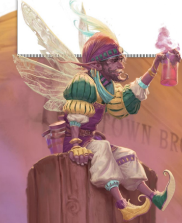

Tavern Staff
Tia & Mia
Background
Started their lives at the circus aged twelve. They tried pickpocketing a man in a bright red travelling cloak when the traveler just as swiftly swung them up dangling several feet in the air. The traveler instead of punishing them, hired the young pickpockets to prevent other pick-pockets from causing trouble in the circus which caused theft to drop to nearly zero almost instantly. Soon onlookers saw their enforcing antics and they soon became a knife throwing act with the knives as light as their air they cut through. They soon became tired of life on the road and made plans for a tavern with Flip, unknowingly creating the foundational building plans for A Trip Away. So many hidden passages and rooms were made it’s said only the three of them know the entire layout. Once settled in A Trip Away they soon left their act behind. Tia started a small garden behind the inn, while Mia was a social figure outside of work occasionally missing the open road.
Characteristics
Underworld: Tia & Mia started their lives as pickpockets and thieves, and know a lot about the criminal elements of the world. The local chapter of your thieves guild may even know of their skills and be happy to meet with them.
Elves: As half-elves, the twins sometimes encounter distrust from their purer-blooded cousins. They harbor resentment for an elf faction in your world and are eager to help in any mischief against them.
Tia & Mia Character Info
Flip Krongovsko
Background
Always felt lucky to be born into a family of circus royalty. He would often spend time on the road reading about his family’s rise to fame performing to royalty, beggars, and all in between. He would accompany his father by asking constant questions about past performances always engrossed in the constantly changing answers. The magical life of entertainment entrapped Flip and he couldn’t dream of anything different. Eventually, Flip wondered if the circus was really everything. Unable to speak his worries to friends, family, or the audience, a seed of doubt was planted within him. Finally after plucking the courage, Flip left his circus family to create a standstill building of brick & mortar rather than a restless tent of pegs and canvas. He gathered few friends to plan his idea of whom were Estabon, the company cook; Nix, a sprite in Flip’s debt; and Tia & Mia, the knife-throwing twins. Revealing his plan to family presented him with an expected response of shock, pleading, love, and worst of all from his father, denial. After saying goodbye, the group stood together crying for the first time. As four hands landed on his shoulder wordlessly, Flip realized the true meaning of family and understood this was the best decision of his life.
Characteristics
Bards: A circus-themed tavern has a way of attracting extroverts. Flip is good friends with any famous bards or bardic organizations in your local area, and some of them occasionally play at A Trip Away.
Underworld: As someone who grew up in the circus and now runs a tavern, Flip has had many opportunities to work with, or learn about, the shadier local elements. As long as it won’t come back to bite them, Flip has a lot of useful information on your local thieves’ guild or criminal rumors.
Tithes: A business as successful as A Trip Away is of interest to a local tax collector. An unfriendly local ruler in your world might be pressuring Flip to make higher and higher payments.
Flip Krongovsko Character Info
Nix the Mixologist
Background
Having had to escape the Feywild for reasons he is still evasive about, Nix stumbled his way to the non-fey world finding work for an alchemist providing herbalism advice. While the tinctures and philters he provided were child’s play to him, they were quite extraordinary to the alchemist and his customers, often pig farmers and herders. As a Fey, it is quite hard to go unnoticed. Suddenly one day at the local bar, he was captured. Overhearing his captors he pieced together that he was to be picked apart for ingredients and sold at a hefty price. Suddenly, on the third and last day of travel the wagon came to an abrupt stop. A cheery voice discussed outside until Nix’s cage was flung into the air. The cheery voiced man uncovered the cloth from his cage offering the Fey a place to live all while some of the most heart-swelling music and color of excitement filled the background, nearly reminding him of home. Nix’s savior happened to be Flip, who never explained his reason for saving Nix despite paying double the original offer causing Nix to repay the debt by working with Flip in the circus. Joining Flip in A Trip Away, Nix became a mixologist extraordinaire enjoying the new spotlight at the tavern.
Characteristics
Magic Merchant: The merchant that Nix escaped from was a neutral/evil magic user in your world, and he bears a grudge. He’s been looking for the gnome that stole his sprite.
Feywild: Nix was once a denizen of your Feywild court. He still knows the secret back ways into that realm, and could help the adventurers get where they need to go, providing information on relevant lords, ladies, or points of interest. Fey NPCs in your world might even recognize him.
Poisons: Decades of experimentation have taught Nix a lot about what you can and can’t drink. He is able to identify the qualities (or symptoms) of any mysterious poisons your adventurers might come across.
Nix Character Info
Estabon
Background
Years ago in the kingdom of Duluun, a red dragonborn, Lakash, was the High Ovenmaster living a life of fine wine a silken robes. Soon, inconsistencies were noticed within the kitchen’s supplies. Food running out early and supplies never delivered, even when the merchants swore they had given the food to the kitchen. One day, a large banquet was thrown for visiting royalty, and while they were drawn to the newly revealed spectacular cake, they grimaced and became enraged as massive handfuls were taken from it. The Ovenmaster was ordered to make an appearance but he was nowhere to be found. Three months and 600 miles later, a red dragonborn with a knack for cooking arrived at The Top of the World Circus looking for work with no questions asked. He soon became well known within the company building morale with his delicious food. Flip finally offered him a permanent job at A Trip Away with a proper kitchen. Estabon excitedly accepted and now cooks incredibly exquisite meals for the patrons of A Trip Away, while always mysteriously never making cakes.
Characteristics
Royalty: If there is a royal faction in your world, Estabon has a surprising amount of insider knowledge about it. Should one of your nobles stop in at A Trip Away and get a glimpse of him, they might know Estabon by a different name.
Dragonborn: In Duluun, being a red dragonborn doesn’t carry the same racial history that it does elsewhere. A dragonborn faction in your world might not be willing to overlook his coloring.
Gastronomy: Estabon is always looking to top himself in the kitchen and will pay good money for unusual ingredients the adventurers may gather. The fact that no one’s eaten it before doesn’t mean it can’t be food!